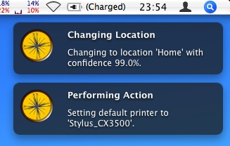
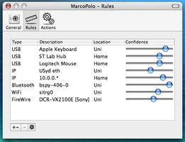

MarcoPolo
Automatic location switching for Mac OS X.
© 2006-7 David Symonds
I am writing a simple
development blog if you are interested
in following development.
Please send me criticism, adoration and comments!
What is it?

The Mac OS X concept of a "location" is a collection of settings for your
computer's networking devices. Switching your current location is much easier
than changing all those individual settings, yet you still have to explicitly
switch to the correct location each time.
However, it is often the case that there are good hints as to your current
location. For example, a particular USB mouse might only be used at your work,
so its presence is a strong indicator that your location should be "Work". This
can be extended to more things, such as the pattern of an
automatically-assigned IP address, other connected hardware, or visible WiFi
(AirPort) networks.
MarcoPolo allows you to provide these hints, and it will make educated guesses
as to your current location, and automatically switch for you. It quietly stays
in the status bar at the top of your screen (right-hand side of the menu bar),
from where it can be configured to your own specifications.

Features
-
Fuzzy-logic-based matching on:
- Discoverable Bluetooth devices
- Attached FireWire devices
- Assigned IP addresses
- Power source (Power Adapter vs. Battery)
- Attached USB devices
- Visible WiFi networks
- Actions triggered by changing location, with an optional delay:
- Setting your default printer
- Opening a file (an application, a document, etc.)
- Setting the default SMTP server for Mail.app
- Turning on or off Bluetooth
- Turning on or off WiFi (AirPort)
- Running a shell script (or any other kind of script, via Platypus)
- (more on the way!)
- A "default location" for when rules don't match
- Growl support
- Stays out of your Dock, in the menu bar at the top of your screen
- Localisation into:
Comparison with similar programs
|
MarcoPolo |
Home
Zone |
Network
Location |
Location
Changer |
Location X |
| Detects Bluetooth |
Yes | Yes |
No | No |
No |
| Detects FireWire |
Yes | No |
No | No |
No |
| Detects IPs |
Yes | No |
No | Yes |
No |
| Detects Power |
Yes | No |
No | No |
No |
| Detects USB |
Yes | No |
No | No |
No |
| Detects WiFi (AirPort) |
Yes | Yes |
No | Yes |
Yes |
| Uses fuzzy-logic |
Yes | No |
No | No |
No |
|
| Actions |
Several | Several |
Several | N/A |
Lots |
|
| Cost |
Free | Free in beta |
$15 | Free? |
$20 |
-
Home Zone has its own
location system (called "zones") which can be indicated by detection
of AirPort base stations or paired Bluetooth devices, and has quite a
few handy actions that can be triggered on both entering and leaving
a zone. Takes quite a while to configure, and doesn't handle
conflicting evidence (i.e. no fuzzy-logic). It's in beta for now, but
is planned to be shareware soon.
-
NetworkLocation
pops up an interface when your computer wakes from sleep, allowing you
to quickly select your preferred network location. No automatic
location selection, but a wider range of actions. Costs $15, with a
free trial available.
-
LocationChanger
is a shell script for automatically changing location based on
IP address. Requires lots of hacking for customisation, and is not
user friendly. Seems to be freely usable. One modification of it is
also called LocationChanger,
and seems to be more structured and well-organised.
-
Location X has
its own location system, separate from the Mac OS X location system.
It does auto-switch based on the wireless network you are currently
connected to, and has an extensive list of actions. It costs $20, with
a free demo available. It hasn't been updated since 2005.
Other programs that I haven't fully investigated, but may be useful are
Home and Away
and WiLMa.
What you need
- Mac OS X 10.4 (Tiger).
- More than one network location (Apple Menu -> Location).
Caveats/Pitfalls
- The UI for actions is still a bit clumsy
- Adding rules isn't possible straight after starting it up
I also have a Trac online for bug reports and
feature requests. Please use it!
Download
License/Cost
MarcoPolo is released under the terms of the
GNU GPL;
that means it is free to use, share and modify, as long as you pass those same
permissions along to anyone you redistribute to.
Though MarcoPolo is free to use, share and modify, and will remain so, I
welcome donations to encourage me to keep developing it. To put things in
perspective, if you work as a
$100/hr consultant, changing your location four times per day, and MarcoPolo
saves you 15 seconds each time (easy to do if you're using several actions),
that's worth about $37 per month. How about sharing some of that with me? ;-)
David Symonds <dsymonds@gmail.com>
$Id$